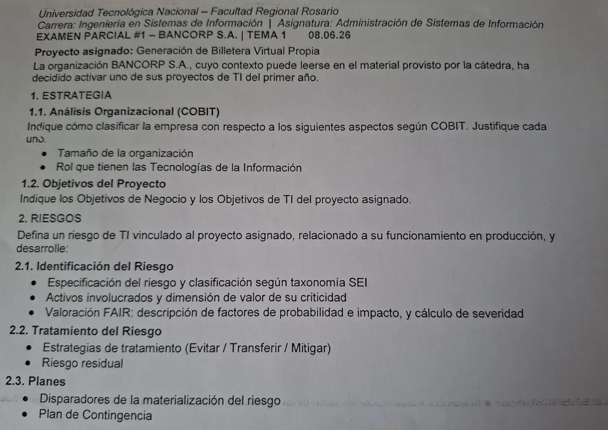

1° parcial, 08/06/2026
1° parcial, 08/06/2026
Enunciado


Propuesta de respuesta
Respuesta no verificada. La propuso Luta Studios con inteligencia artificial y ningún docente la revisó. Puede tener errores.
1. Estrategia
1.1. Análisis organizacional (COBIT)
| Aspecto | Clasificación | Justificación |
|---|---|---|
| Tamaño | Grande | Un banco S.A. con sucursales, mesa de servicios y áreas de TI propias supera los 250 empleados a tiempo completo, que es el corte de COBIT |
| Rol de TI | Estratégico | Si fallan el core bancario, el homebanking o los pagos, el banco no puede operar, así que TI es crítica para funcionar. Y los productos nuevos, como esta billetera propia, salen de TI, así que también es crítica para innovar |
1.2. Objetivos del proyecto
| Objetivos de negocio | Objetivos de TI |
|---|---|
| Sumar 50.000 clientes activos en la billetera en los 12 meses posteriores al lanzamiento | Poner en producción la billetera integrada al core y a los pagos con QR en 9 meses |
| Aumentar un 15 % los ingresos por comisiones de pagos digitales en el primer año | Mantener una disponibilidad del 99,9 % mensual en el servicio de pagos de la billetera |
| Pasar a la billetera el 20 % de las operaciones que hoy se hacen por caja en sucursal, en 18 meses | Pedir autenticación multifactor en el 100 % de las operaciones críticas desde el lanzamiento |
2. Riesgos
2.1. Identificación del riesgo
Especificación, con la forma <Activo> presenta <Degradación en dimensión> causada por <Amenaza> de la planilla:
El servicio de autorización de pagos de la billetera presenta demoras y rechazos de operaciones causados por la saturación de su capacidad en los picos de uso (cobro de sueldos, aguinaldo y fechas de promociones), lo que deja a los clientes sin poder pagar ni transferir y afecta el proceso crítico de pagos.
| Clase | Subclase | Elemento |
|---|---|---|
| 2. Fallas de sistemas y tecnología | 2.1 Hardware | Capacidad |
| 2. Fallas de sistemas y tecnología | 2.3 Sistemas | Diseño |
| Activo | Tipo | Dimensión de su criticidad |
|---|---|---|
| App de la billetera y servicio de autorización de pagos | Software | Disponibilidad |
| Servidores o instancias donde corre el servicio | Hardware | Disponibilidad |
| Base de datos de saldos y movimientos | Soporte o contenedor | Disponibilidad e integridad |
| Saldos y movimientos de los clientes | Información | Integridad |
| Enlace con la red de pagos y con el core | Servicios | Disponibilidad |
La dimensión principal es la disponibilidad. También la integridad, porque una operación que se corta a mitad de camino puede quedar duplicada o sin registrar.
Valoración FAIR.
| Factores | Valor | |
|---|---|---|
| Probabilidad | Frecuencia de amenazas con contacto periódico, porque los picos se repiten todos los meses en fechas conocidas. Capacidad de resistencia baja, porque un producto nuevo no tiene su capacidad probada con uso real | 4, probable |
| Impacto | Productividad, los clientes no pagan y los comercios no cobran. Costo, reclamos, devoluciones de operaciones duplicadas y horas de soporte. Sensibilidad, la reputación del producto recién lanzado y posibles reclamos ante el regulador. Volumen, todos los clientes activos en el pico. Secundarios externos, los medios, las redes y los competidores | 4, mayor |
2.2. Tratamiento del riesgo
| Estrategia | Qué se hace | Efecto |
|---|---|---|
| Evitar | No se puede sin renunciar a la billetera, que es el proyecto | |
| Transferir | Correr el servicio en la nube con autoescalado y un contrato con el proveedor (UC) con SLA de disponibilidad y penalidades | Baja el impacto económico. La probabilidad no cambia |
| Mitigar | Pruebas de carga antes de cada pico y de cada versión (8.29), plan de capacidad, redundancia de instancias, monitorización activa de tiempos de respuesta y uso de recursos (8.15 y 8.16), y control de duplicados en la cola de operaciones | Baja la probabilidad, y detectar temprano baja el impacto |
Riesgo residual. Misma especificación, probabilidad 2 (poco probable) e impacto 3 (significativo).
2.3. Planes
Disparadores.
- El tiempo de respuesta del servicio de pagos supera los 3 segundos o los rechazos pasan del 2 % durante 5 minutos (monitorización activa).
- El uso de CPU o memoria de las instancias pasa del 85 %.
- Varios incidentes por pagos rechazados entran a la mesa de servicios en pocos minutos.
- Quejas en redes sociales.
Plan de contingencia.
- La alerta del monitoreo o la mesa de servicios registra el incidente con prioridad alta, por impacto y urgencia altos.
- Escalado funcional a Infraestructura, que suma instancias o capacidad.
- Si no alcanza, modo degradado. Se priorizan pagos y transferencias y se suspende lo que no es crítico (historial, promociones).
- Aviso a los clientes en la app y en redes, con los medios alternativos (tarjeta de débito, homebanking).
- Escalado jerárquico al responsable del área si el corte supera lo acordado en el SLA.
- Al normalizarse, conciliación de las operaciones del período para encontrar duplicadas o perdidas, y cierre del incidente.
Respuesta no verificada. Puede tener errores.
Se armó con 1° parcial, factores de diseño de COBIT, objetivos y gestión de riesgos (especificación, SEI, activos y dimensiones, FAIR, estrategias, controles de ISO 27002, residual, disparadores y planes).
Quedó en duda: El contexto de Bancorp no está en la materia, así que la cantidad de empleados, los sistemas y los sectores salen de suponer un banco grande. Si el contexto dice menos de 250 empleados, el tamaño cambia. Las cifras de los objetivos y de los disparadores son de ejemplo. La foto del enunciado puede estar cortada abajo. Si después del plan de contingencia pedía recuperación y continuidad, faltan.
¿Cómo te fue?
Marcá cada tema del examen.
- COBITCOBIT 2019, en 1° parcial
- ObjetivosObjetivos, en 1° parcial
- RiesgosRiesgos, en Final